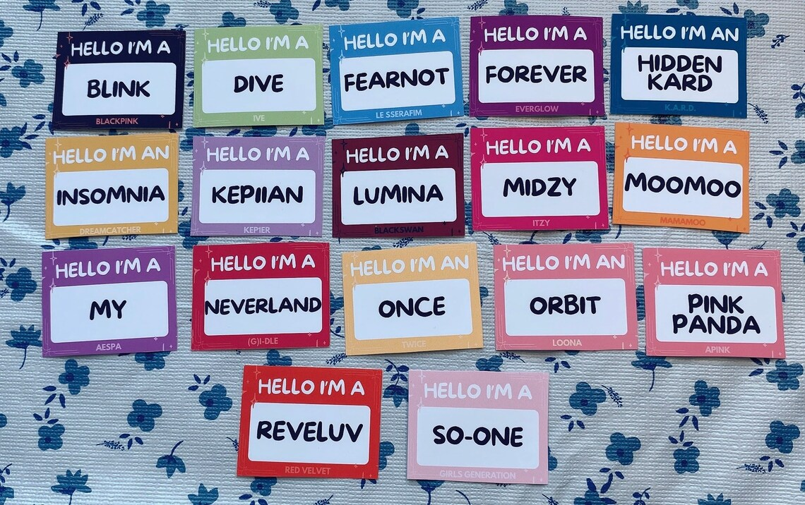

Qual o nome do seu fandom?
Você sabia que os fãs de um grupo tem um nome? Na verdade, todo artista tem seu fandom. Fandom é um termo usado para se referir a uma comunidade de fãs de um determinado artista. Um exemplo de fandom é o Arianators, que é a base de fãs da cantora americana Ariana Grande. Mas e quanto aos grupos de k-pop? Quer saber o nome do fandom que você faz parte? Vamos descobrir!